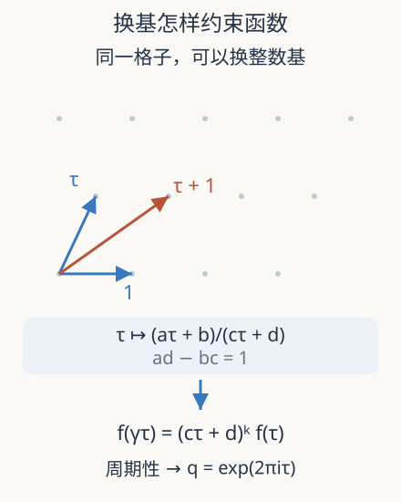

本页目录
数论桥梁 03 · 模形式：格子换了基，函数应当怎样变
一个复函数的对称性，怎样与算术归一化一起约束系数，并接上椭圆曲线点数？先修椭圆曲线群、复数与幂级数。严格理论还需复分析中的全纯性；本讲将它明确列为条件，不把光滑实函数当成模形式。
1. 同一张格子有许多地址写法
在复平面取两个实线性无关的周期 \(\omega_1,\omega_2\)，生成格子 \(\Lambda=\mathbb Z\omega_1+\mathbb Z\omega_2\)。商空间 \(\mathbb C/\Lambda\) 把相差一个格点的复数视为同一点，是复环面，也能写成光滑椭圆曲线。换周期基不应把同一个对象误认成新的对象。
缩放后可用 \(\Lambda_\tau=\mathbb Z+\mathbb Z\tau\)，其中 \(\operatorname{Im}\tau>0\)。对整数矩阵 \(\gamma=\begin{pmatrix}a&b\\c&d\end{pmatrix}\)，若 \(ad-bc=1\)，设
乘上 \(c\tau+d\) 后，新格子的两个生成元变成 \(c\tau+d\) 与 \(a\tau+b\)。矩阵的整数逆存在，所以它们又生成原格子。这解释了分式线性变换的来源：它记录换基及尺度，不是凭空指定的一种函数技巧。

2. 定义中的三个条件各管什么
对整个模群 \(\mathrm{SL}_2(\mathbb Z)\)，整数权重 \(k\) 的模形式是上半平面的全纯函数，满足
并在尖点无穷远全纯。最后一条可这样看：平移矩阵给 \(f(\tau+1)=f(\tau)\)，于是令 \(q=e^{2\pi i\tau}\)，周期函数可写成 \(q\) 的函数；尖点全纯要求展开 \(f=\sum_{n\ge0}a_nq^n\) 没有负次幂。若 \(a_0=0\)，就是尖点形式。
三条限制相互配合。它们本身不强迫系数为整数：给一个模形式乘任意复常数仍是同权重模形式；整性还要看具体对象及归一化。\(q\) 本身有漂亮的幂级数，却不满足所有换基变换；某个满足变换律但在尖点有极点的对象是亚纯模对象，不能放进同一个全纯空间。还可立刻检查：\(-I\) 不改变 \(\tau\)，却给 \(f(\tau)=(-1)^kf(\tau)\)，所以奇权重的全模群形式必为零。换子群或乘子系统后则需重新讨论。
3. 用一个非平凡对象连接定义和计算
经典的判别式模形式为
它是权重 12 的尖点形式。乘积在 \(|q|<1\) 收敛，但“这个乘积恰好有权重 12 的变换律”是需要证明的经典定理，不能仅由收敛性推出。这里的 \(\Delta(\tau)\) 是函数，别与单条 Weierstrass 方程的代数判别式数值混同；它们相关，却不是无需选择尺度就相等的符号。
前几个系数可以独立算。到 \(q^3\) 为止，乘积内部只需 \((1-q)^{24}(1-q^2)^{24}\)：前者是 \(1-24q+276q^2+O(q^3)\)，后者为 \(1-24q^2+O(q^4)\)，相乘得 \(1-24q+252q^2+O(q^3)\)，外面再乘 \(q\)。有限手算验证了系数，不会验证所有模变换。
4. S 变换给一个真正能失败的数值检查
取 \(S=\begin{pmatrix}0&-1\\1&0\end{pmatrix}\)，变换律要求 \(\Delta(-1/\tau)=\tau^{12}\Delta(\tau)\)。在虚轴 \(\tau=iy\) 上，\(i^{12}=1\)，故
实验把无限乘积截成前 \(N\) 项，记为 \(\Delta_N\)，检查相对残差 \(\Delta_N(i/y)/(y^{12}\Delta_N(iy))-1\)。这个残差的理论目标是零，但有限 \(N\) 时一般不为零。若只展示两边“几乎相等”的打印值，可能掩盖截断误差和有效位数的损失。
误差为何在小 \(y\) 时麻烦？此时 \(q=e^{-2\pi y}\) 较大，尾部衰减较慢。由 \(-\log(1-u)\le u/(1-u)\)，对实数 \(0<q<1\) 有
这是把尾项逐个取对数，再用几何级数得到的界。它还说明截断乘积比真实值大，因为删去了一些小于 1 的因子。若 \(y=1\)，两边截断计算完全一样，残差永远是零；这是一条无法区分正确与错误实现的弱测试。
5. 为什么数论会关心这种函数
模形式空间在固定权重和层时是有限维的。Hecke 算子给这个空间一族相容的线性操作；共同特征向量的 Fourier 系数满足额外乘法关系。对归一化、平凡特征的权重 \(k\) 特征形式，好素数处满足 \(a_{p^2}=a_p^2-p^{k-1}\)。关系中的幂次取决于权重，不能随手把权重 12 的 \(\Delta\) 系数当成椭圆曲线的迹。
有理数域上椭圆曲线的模性连接的是适当层上的权重 2 新形式，在好素数处 \(a_p=p+1-\#E(\mathbb F_p)\)。经典模性定理不是本讲的新成果。研究继续探究其他数域、Shimura 曲线、Galois 表示和自动形式之间的关系，范围必须随定理变化。
2026 年 Dummigan–Tiwari 的预印本研究全实奇数次域上的算术型双曲一致化，证明指定一致化的存在会推出几何模性。条件句中的“存在”不能删去：它不是宣布所有这些域上的曲线都已无条件模化。想读懂此类进展，格子、模曲线与域上定义的态射正是必要语言。
数值一致性与定理身份分开验收
计算变换残差时，两边都必须独立按各自的虚部求乘积。若程序先算左边，再用理论因子直接生成右边，无论乘积实现是否正确，残差都会被强制变成零。本实验因此没有用等式制造第二个数。
它还实现了真正独立的 Eisenstein 路径。令 \(\sigma_r(n)=\sum_{d\mid n}d^r\)，分别截断
再计算
这条路径逐个求约数幂和，不调用乘积实现；实验同时报告有符号的 \(\Delta_N^E/\Delta_N-1\)，图则画 \(\log_{10}|\text{残差}|\)。同一个 \(N\) 对两种展开不代表同样大小的截断误差，尤其小 \(y\) 时低阶 Eisenstein 截断可能非常粗；恰因误差机制不同，增加 \(N\) 后在各自可分辨精度内靠近同一值才是有区分力的交叉核对。该恒等式及240、−504的标准归一化见 Duke–Jenkins，式(3)及(8)，第1328页。
特别是很大的虚部使 \(q\) 极小，判别式也非常小。Eisenstein 路径用两个接近 1 的量 \(E_4^3,E_6^2\) 相减，绝对误差看似很小，相对误差却可能远大于机器 epsilon；直接积算或在对数域累加通常更稳健。例如 \(y=2.5\) 时，把 \(N\) 从 3 增到 60，独立表达相对差仍约停在 \(6.4\times10^{-13}\)，说明此处限制来自浮点相消而非级数尾部。相反，小虚部的困难主要是截断尾部。需要同时报告输入、截断、有符号表值和绝对值图，才能判断该增加精度还是增加项数。图中对 \(|\text{残差}|\) 使用 \(10^{-16}\) 的显示下限只为避免 \(\log 0\)，不表示真误差小于该数。
这种验收思想也适用于研究中的新形式搜索。有限多个系数吻合通常只是证据；要把它升级为证明，必须处在已知有限维空间中，并给出足够的系数界或其他唯一性依据。不能把实验曲线看起来正确，替代对象属于该空间的条件检查。
6. 实验与迁移
先预测小 \(y\) 下加大 \(N\) 的作用，再对比 \(y\) 与 \(1/y\)。观察残差何时进入机器舍入量级。
默认静态结果：乘积路径给 \(\Delta_3(0.4i)\approx0.008992596\)；\(\Delta_3(2.5i)\approx1.507011825\times10^{-7}\)；\(0.4^{12}\Delta_3(0.4i)\approx1.508707185\times10^{-7}\)；S 变换相对残差约 −0.001123718。独立路径在同样粗的 \(N=3\) 下给 \(E_{4,3}\approx38.184916\)、\(E_{6,3}\approx-214.315606\)、\(\Delta_3^E\approx5.639919\)，与乘积相差很大；在默认 \(y=0.4\) 下把 \(N\) 增到 60，二者相对差约为 \(-2.3\times10^{-12}\)。这个“先明显不同、再进入舍入平台”的行为是独立实现的验收信号，平台高度会随 \(y\) 与数值表达改变。
题一。 一段程序只测试 \(\tau\mapsto\tau+1\)，再打印出整数 q 系数，能否认定输出是模形式？
独立作答后核对
不能。周期性与系数整性没有给出 S 变换，也没有完整检查全纯性和尖点条件。例如 \(q\) 就满足前两种现象，却不是全模群的某个非零整数权重模形式。应按定义逐条说明，有限数值检验仍只是必要检查。
题二。 用 \(\Delta\) 的 \(a_2=-24\)、权重 12，算 \(a_4\)；若误套椭圆曲线权重会怎样？
独立作答后核对
\(a_4=(-24)^2-2^{11}=576-2048=-1472\)，与展开一致。误用权重 2 会得到 574。这个差异说明同一个 \(a_p\) 符号必须连同对象、权重和好素数条件一起读。
速查与来源
| 对象 | 本讲公式 | 边界 |
|---|---|---|
| 换基 | \(f(\gamma\tau)=(c\tau+d)^kf(\tau)\) | 另需两处全纯性 |
| 权重 12 判别式 | \(q\prod(1-q^n)^{24}\) | 不是权重 2 新形式 |
| 虚轴检验 | \(\Delta(i/y)=y^{12}\Delta(iy)\) | 截断只近似；\(y=1\) 退化 |
下一讲：Frobenius 与 Galois 表示。实际访问 2026-09-08：Milne，模形式讲义 v1.31，2017-03-22；Sutherland，2023 第 18、24 讲；Dummigan–Tiwari，首稿 2026-07-04，v2 修订 2026-08-27，预印本。这里列的是已核查入口，不是最新文献的穷尽清单。